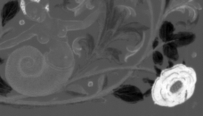
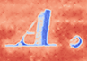
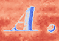

Color
Last modified: May 17, 2022
Contents
blue
Image [Float] blue ()
| Operates on: | Image [RGB] |
|---|---|
| Returns: | Image [Float] |
| Category: | Color |
| Defined in: | color.py |
| Author: | Michael Droettboom and Karl MacMillan |
Returns a GREYSCALE image where each pixel is the blue component of the RGB original.
Example 1: blue()

cie_Lab_L
Image [Float] cie_Lab_L ()
| Operates on: | Image [RGB] |
|---|---|
| Returns: | Image [Float] |
| Category: | Color |
| Defined in: | color.py |
| Author: | Michael Droettboom and Karl MacMillan |
Returns a FLOAT image where each pixel is an L value in the CIE L*a*b* color space. For an introduction to the different color spaces, see A. Ford and A. Roberts: Color Space Concersions (1998).
The present conversion uses the RGB to Lab conversion routine from VIGRA.
Example 1: cie_Lab_L()
cie_Lab_a
Image [Float] cie_Lab_a ()
| Operates on: | Image [RGB] |
|---|---|
| Returns: | Image [Float] |
| Category: | Color |
| Defined in: | color.py |
| Author: | Michael Droettboom and Karl MacMillan |
Returns a FLOAT image where each pixel is an a value in the CIE L*a*b* color space. For an introduction to the different color spaces, see A. Ford and A. Roberts: Color Space Concersions (1998).
The present conversion uses the RGB to Lab conversion routine from VIGRA.
Example 1: cie_Lab_a()

cie_Lab_b
Image [Float] cie_Lab_b ()
| Operates on: | Image [RGB] |
|---|---|
| Returns: | Image [Float] |
| Category: | Color |
| Defined in: | color.py |
| Author: | Michael Droettboom and Karl MacMillan |
Returns a FLOAT image where each pixel is a b value in the CIE L*a*b* color space. For an introduction to the different color spaces, see A. Ford and A. Roberts: Color Space Concersions (1998).
The present conversion uses the RGB to Lab conversion routine from VIGRA.
Example 1: cie_Lab_b()
cie_x
Image [Float] cie_x ()
| Operates on: | Image [RGB] |
|---|---|
| Returns: | Image [Float] |
| Category: | Color |
| Defined in: | color.py |
| Author: | Michael Droettboom and Karl MacMillan |
Returns a FLOAT image where each pixel is a x value in the CIE 1964 Colorimetric system in range [0, 1).
Example 1: cie_x()
cie_y
Image [Float] cie_y ()
| Operates on: | Image [RGB] |
|---|---|
| Returns: | Image [Float] |
| Category: | Color |
| Defined in: | color.py |
| Author: | Michael Droettboom and Karl MacMillan |
Returns a FLOAT image where each pixel is a y value in the CIE 1964 Colorimetric system in range [0, 1).
Example 1: cie_y()
cie_z
Image [Float] cie_z ()
| Operates on: | Image [RGB] |
|---|---|
| Returns: | Image [Float] |
| Category: | Color |
| Defined in: | color.py |
| Author: | Michael Droettboom and Karl MacMillan |
Returns a FLOAT image where each pixel is a z value in the CIE 1964 Colorimetric system in range [0, 1).
Example 1: cie_z()
color_ccs
Image [RGB] color_ccs (bool ignore_unlabeled = True)
| Operates on: | Image [OneBit] |
|---|---|
| Returns: | Image [RGB] |
| Category: | Color |
| Defined in: | gui_support.py |
| Author: | Michael Droettboom, Karl MacMillan, and Robert Butz |
Returns an RGB image where each connected component of the image is colored one of eight different colors. This function can be used to verify that cc_analysis is working correctly for your image.
It should be noted that this coloring does not take care of component adjacency. It may therefore happen that adjacent components obtain the same color. If this is not acceptable in your use case, have a look at graph_color_ccs instead.
- ignore_unlabeled:
- do not colorize unlabeled pixels (pixel value one), but leave them black
Note
Connected component analysis must already be performed on the image (using cc_analysis, for example) in order for this to work.
Example 1:

colors_to_labels
Image [OneBit] colors_to_labels (dict rgb_to_label)
| Operates on: | Image [RGB] |
|---|---|
| Returns: | Image [OneBit] |
| Category: | Color |
| Defined in: | color.py |
| Author: | Christoph Dalitz and Hasan Yildiz |
Converts an RGB image to a labeled onebit image.
Each RGB color is replaced by the label specified in the mapping rgb_to_label. RGB values not listed in rgb_to_label are white in the returned onebit image. When no mapping rgb_to_label is provided, each different RGB color is replaced by a unique label.
This is mostly useful for reading manually labeled groundtruth data from color PNG files. Example:
# map red to label 3, and green to label 5
labeled = rgb.colors_to_labels( {RGBPixel(255,0,0): 3, RGBPixel(0,255,0): 5} )
A typical use case of this plugin is in combination with ccs_from_labeled_image.
cyan
Image [Float] cyan ()
| Operates on: | Image [RGB] |
|---|---|
| Returns: | Image [Float] |
| Category: | Color |
| Defined in: | color.py |
| Author: | Michael Droettboom and Karl MacMillan |
Returns a GREYSCALE image where each pixel is the cyan component of the RGB original.
Example 1: cyan()
false_color
Image [RGB] false_color (Choice [diverging|rainbow] colormap = diverging)
| Operates on: | Image [Float|GreyScale] |
|---|---|
| Returns: | Image [RGB] |
| Category: | Color |
| Defined in: | color.py |
| Author: | Christoph Dalitz |
Returns a false color representation of the given image. This can help visualize greyscale images that are not real images but are representations of other kinds of data.
The option colormap specifies how the values are converted:
0: diverging colormap after Moreland with blue representing low, white representing mean, and red representing high values
1: rainbow colormap with blue representing low, green representing mean, and red representing high values
Note that float images are scaled to the range [0,1], which means that the highest value is always colored red and the lowest value blue. For greyscale image no range stretching is done, so if you want this, you must first convert the image to a float image.
Reference: K. Moreland: Diverging Color Maps for Scientific Visualization. 5th International Symposium on Visual Computing, 2009
Example 1: false_color(0)
 

Example 2: false_color(1)
graph_color_ccs
Image [RGB] graph_color_ccs ([object ccs], [RGBPixel colors] = None, Choice [CC center|20% contour points|voronoi diagram] method = 20% contour points, bool unique = False)
| Operates on: | Image [OneBit] |
|---|---|
| Returns: | Image [RGB] |
| Category: | Color |
| Defined in: | geometry.py |
| Author: | Oliver Christen, Tobias Bolten, Christoph Dalitz |
Returns an RGB Image where each segment is colored with one of the colors from colors in such a way that neighboring segments have different colors. Optionally, each segment can also be colored uniquely with a color that is close to one of the given colors.
Reference:
C. Dalitz, T. Bolten, O. Christion: "Color Visualization of 2D Segmentations." International Conference on Information Visualization Theory and Applications (IVAPP), pp. 567-572 (2013)
This function can be used to verify that the pagesegmentation e.g. runlength_smearing is working correctly for your image.
Arguments:
- ccs:
- ImageList which contains ccs to be colored. Must be views on the image on which this method is called.
- colors:
- list of colors (instances of RGBPixel) which will be used for coloring. When None, the default set of seven colors given in the example below is used.
- method:
Controls the calculation of the neighborhood graph:
0 = from the CC center points (fastest, but can be inaccurate for large CC's)
1 = from a 20 percent sample of the contour points (reasonable compromise between speed and accuracy)
2 = from the exact area Voronoi diagram (can be slow on large images)
- unique:
- When True, each segment obtains a unique color that is close to one of the colors in colors with the restriction that neighboring segments obtain sufficiently different colors. See the reference above for details.
Example:
ccs = imgage.cc_analysis()
colors = [ RGBPixel(150, 0, 0),
RGBPixel(0, 250, 0),
RGBPixel(0, 0, 255),
RGBPixel(250, 0, 255),
RGBPixel(50, 150, 50),
RGBPixel(0, 190, 255),
RGBPixel(230, 190, 20) ]
rgb = imgage.graph_color_ccs(ccs, colors, 1)
Note
colors must not contain less than six colors.
green
Image [Float] green ()
| Operates on: | Image [RGB] |
|---|---|
| Returns: | Image [Float] |
| Category: | Color |
| Defined in: | color.py |
| Author: | Michael Droettboom and Karl MacMillan |
Returns a GREYSCALE image where each pixel is the green component of the original.
Example 1: green()
hue
Image [Float] hue ()
| Operates on: | Image [RGB] |
|---|---|
| Returns: | Image [Float] |
| Category: | Color |
| Defined in: | color.py |
| Author: | Michael Droettboom and Karl MacMillan |
Returns a FLOAT image where each pixel is a hue value in HSV space in range [0, 1). Since the hue space is cyclic, the shortest distance between 1 and 0 is 0.
Example 1: hue()
magenta
Image [Float] magenta ()
| Operates on: | Image [RGB] |
|---|---|
| Returns: | Image [Float] |
| Category: | Color |
| Defined in: | color.py |
| Author: | Michael Droettboom and Karl MacMillan |
Returns a GREYSCALE image where each pixel is the magenta component of the RGB original.
Example 1: magenta()
red
Image [Float] red ()
| Operates on: | Image [RGB] |
|---|---|
| Returns: | Image [Float] |
| Category: | Color |
| Defined in: | color.py |
| Author: | Michael Droettboom and Karl MacMillan |
Returns a GREYSCALE image where each pixel is the red component of the RGB original.
Example 1: red()
saturation
Image [Float] saturation ()
| Operates on: | Image [RGB] |
|---|---|
| Returns: | Image [Float] |
| Category: | Color |
| Defined in: | color.py |
| Author: | Michael Droettboom and Karl MacMillan |
Returns a FLOAT image where each pixel is a saturation value in HSV space in range [0, 1].
Example 1: saturation()
value
Image [Float] value ()
| Operates on: | Image [RGB] |
|---|---|
| Returns: | Image [Float] |
| Category: | Color |
| Defined in: | color.py |
| Author: | Michael Droettboom and Karl MacMillan |
Returns a FLOAT image where each pixel is the value in HSV space in range [0, 1]. For more information, Google for HSV color space.
Example 1: value()
yellow
Image [Float] yellow ()
| Operates on: | Image [RGB] |
|---|---|
| Returns: | Image [Float] |
| Category: | Color |
| Defined in: | color.py |
| Author: | Michael Droettboom and Karl MacMillan |
Returns a GREYSCALE image where each pixel is the yellow component of the RGB original.
Example 1: yellow()